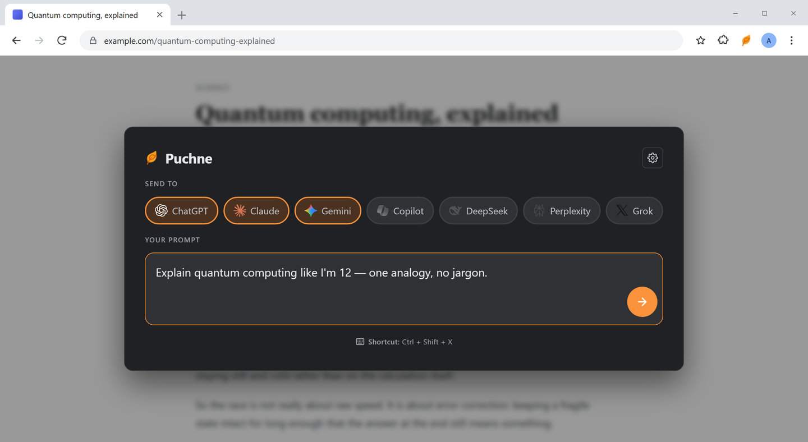
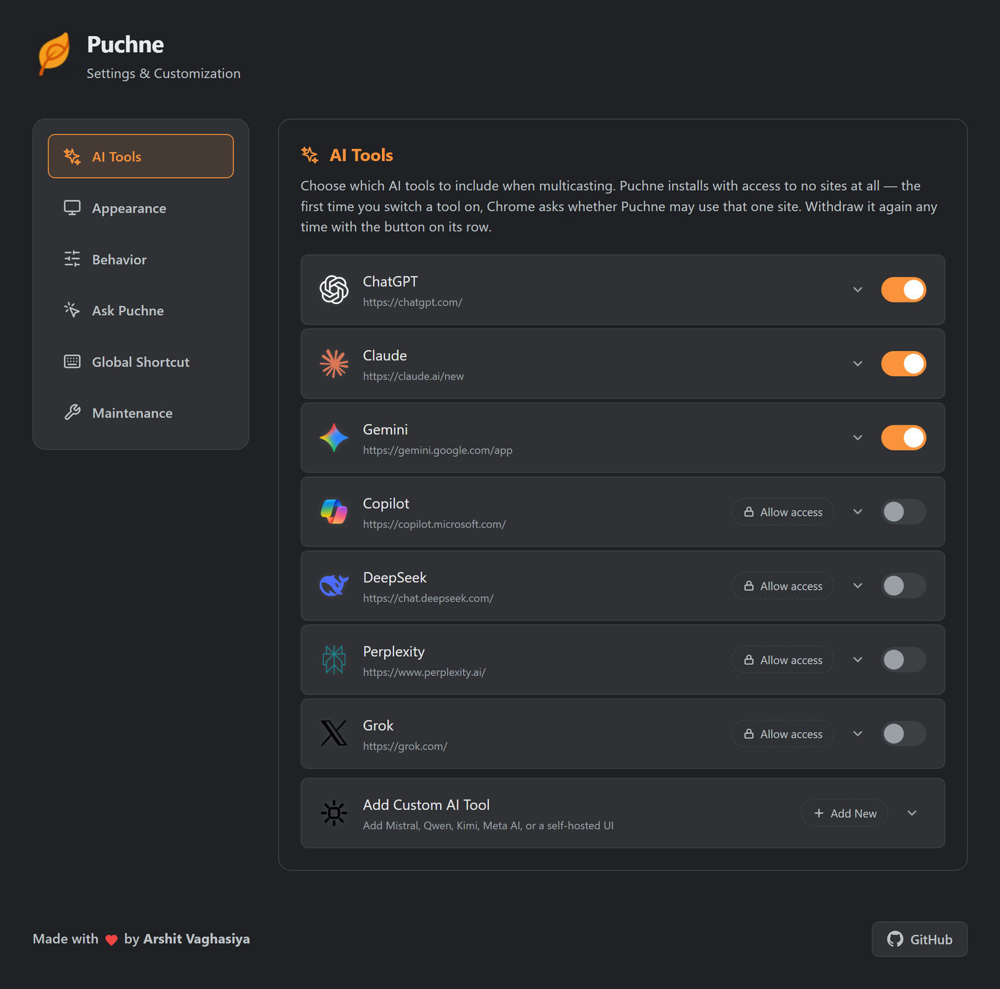

Quick start
Open
CtrlShiftX
Pick
Tap chips.
Send
Enter
Sending a prompt
ShortcutOverlay on the current page. Fastest.
Toolbar iconWorks on pages the overlay can't reach.
SidebarDocked and always open.
| Key | Does |
|---|---|
| Enter | Send |
| Shift + Enter | New line |
| Esc | Close, don't send |
First send to a tool? Chrome asks for that one site. Nothing happens silently.

Grid view
Hover a column to try it
| Control | Does |
|---|---|
| Hover a column | Expands it, then settles back |
| ⤢ in the header | Expands without hovering |
| × in the header | Drops it; space goes to the others |
| Bottom bar | Re-opens a closed tool |
| Reset layout | Equal widths again |
Blank column? That site blocks framing. Use new tabs mode.
New tabs mode
- Settings → Behavior
Right-click the Puchne icon → Options.
- Opening Mode → New Tabs
Grid-only options disappear.
- Turn on Group Tabs
One tab group per send.
Follow-ups
One box → every tool that's already open.
GridBottom bar. Type, Enter.
Real tabsFloating bar — drag or collapse it.
Not open, not reachedSend a fresh prompt to add a tool.
Ask from any page
- Select the text
Nothing selected? It asks about the page.
- Right-click → Ask Puchne
Or Ctrl + Shift + S.
- Choose the behaviour once
In Settings → Ask Puchne: show the prompt, or send it directly.
Send Directly is unforgiving. Whatever is selected goes out at once.
Recent prompts
| Want to… | Go to |
|---|---|
| Reuse one | Click it under the box |
| Keep more or fewer | Behavior → History Limit (5–100) |
| Hide the list | Appearance → Prompt History |
| Delete everything | Maintenance → Clear History |
Add your own tool
- Right-click the chat box → Inspect
On the tool's own page, signed in.
- Copy something stable
An
id, thendata-testid. Never a generated class name. - Fill the form and press Test
Settings → AI Tools → Add Custom AI Tool.
| Field | Example |
|---|---|
| Name | Mistral |
| URL | https://chat.mistral.ai/chat |
| Input selector | textarea[name="message"] |
| Button selector (optional) | button[type="submit"] |
| Input type | Textarea · Contenteditable · ProseMirror |
| Submit type | Auto · Enter · Button · Both |
Text vanishes on submit? Wrong input type — try Contenteditable or ProseMirror.

Fix a broken tool
Opens but doesn't type? The site moved its box. One minute to fix.
Site access
| Action | Where |
|---|---|
| Grant | Chrome asks the first time you use a tool |
| Check | The tool's row in Settings → AI Tools |
| Withdraw | The access button on that row |
| Revoke all | Remove the extension |
Change the shortcuts
- Settings → Global Shortcut
Shows what's bound now.
- Click “Change Shortcuts”
Or paste
chrome://extensions/shortcuts— pages can't link there. - Click the pencil, press your keys
Pick Global to use it outside Chrome.
Nothing happens? Another extension may own that combination, or you're on a
chrome:// page, the Web Store or a new tab — extensions can't run there.
Prompting for comparison
Ask for a shape“Three bullets, then one recommendation.”
Ask for confidence“Say plainly if you're unsure.”
Pre-fill for tweaksAuto-submit off → “in Rust” for one, “in Go” for another.
Follow up to allSame question, fair comparison.
Worked examples: use cases.
Keyboard
| Key | Where | Does |
|---|---|---|
| Ctrl + Shift + X | Any page | Open Puchne |
| Ctrl + Shift + S | Any page | Ask about the selection |
| Enter | Prompt box | Send |
| Shift + Enter | Prompt box | New line |
| Esc | Overlay | Close |
| Tab | Overlay | Move focus (stays inside) |
| Space | On a chip | Toggle that tool |
macOS uses Control, not Command.